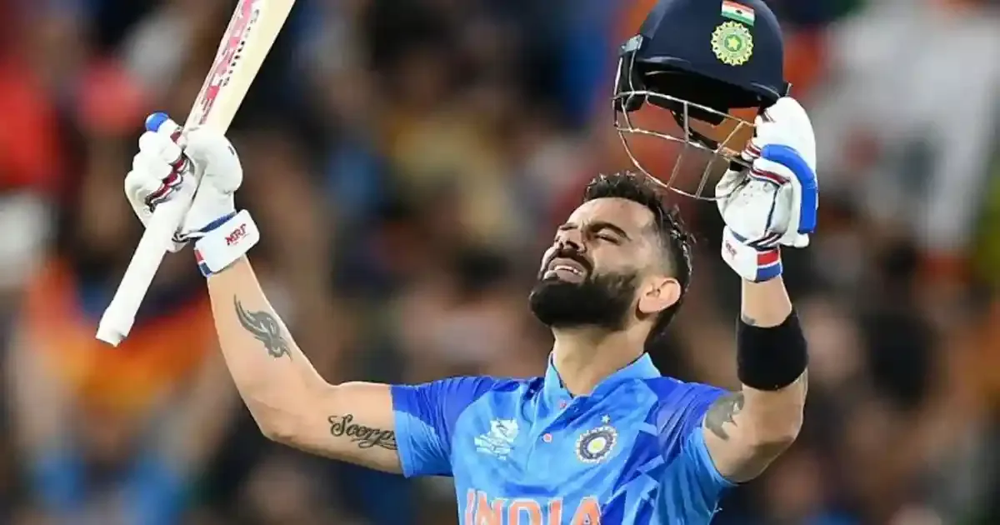

About Virat Kohli
A Glimpse into the Life and Career of the Modern Cricketing Icon

Early Life
Born on November 5, 1988, in Delhi, India, Virat Kohli grew up in a middle-class family. His father, Prem Kohli, worked as a criminal lawyer, while his mother, Saroj Kohli, is a homemaker. From a young age, Kohli showed a keen interest in cricket, and his family supported his passion, enrolling him in cricket coaching classes.
Career Beginnings
Kohli's talent was evident early on, and he quickly rose through the ranks of Delhi's cricket circuit. He made his first-class debut for Delhi in 2006 and soon caught the attention of selectors with his consistent performances. In 2008, he captained the Indian U-19 team to victory in the U-19 World Cup, showcasing his leadership skills and cricketing acumen.
International Career
Virat Kohli made his international debut for India in 2008, and since then, there has been no looking back. He has shattered numerous records and amassed runs across all formats of the game. Kohli's ability to perform under pressure and his hunger for runs have made him a cricketing legend.
Captaincy
In 2013, Kohli was appointed the vice-captain of the Indian cricket team, and he took over the captaincy across all formats in 2017 after the retirement of MS Dhoni. Under his leadership, India has achieved numerous milestones, including a historic Test series win in Australia in 2018-19.